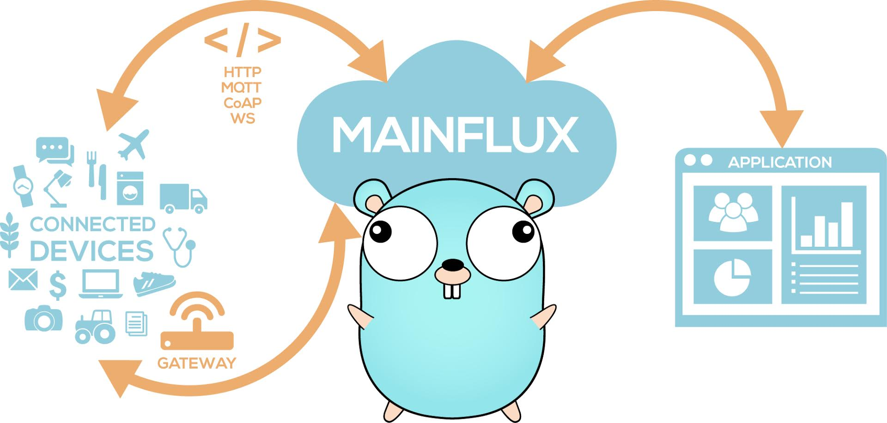

Overview#
About#
What is Mainflux?#
Mainflux is modern, scalable, secure open source and patent-free IoT cloud platform written in Go.
It accepts user and thing connections over various network protocols (i.e. HTTP, MQTT, WebSocket, CoAP), thus making a seamless bridge between them. It is used as the IoT middleware for building complex IoT solutions.

Features#
- Protocol bridging (i.e. HTTP, MQTT, WebSocket, CoAP)
- Device management and provisioning
- Fine-grained access control
- Platform logging and instrumentation support
- Container-based deployment using Docker
Contributing to Mainflux#
Thank you for your interest in Mainflux and the desire to contribute!
Take a look at our open issues. The good-first-issue label is specifically for issues that are great for getting started. Checkout the contribution guide to learn more about our style and conventions. Make your changes compatible to our workflow.